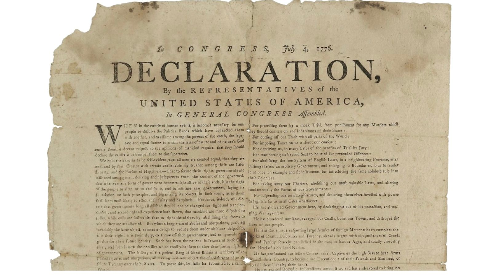
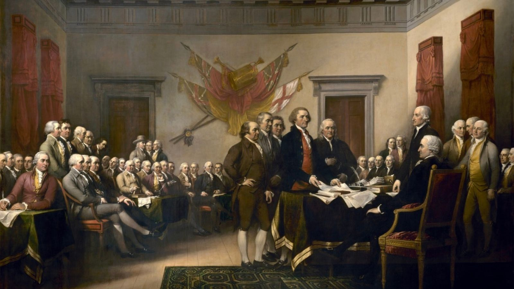
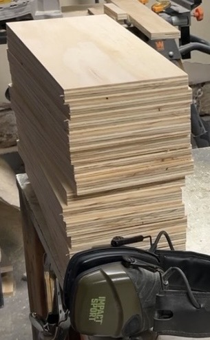

Welcome to the first edition of Freedom News — the official Freedom Crate Co.
dispatch covering American history, firearm heritage, craftsmanship,
workshop updates, product releases, and stories worth preserving.
Thank you for joining the first edition of Freedom News. Our goal is simple:
deliver something worth opening — a short dispatch built around American history,
craftsmanship, shop updates, product spotlights, and the values behind Freedom Crate Co.
Freedom News is not just another sales email. It is part field journal,
part workshop log, part American history digest, and part behind-the-scenes look
at a small American business built around heritage, function, and freedom.

The Declaration of Independence remains one of the most powerful statements of liberty ever written.
This Week in American History
The Declaration That Changed the World
Nearly 250 years ago, fifty-six men signed a document that changed history.
The Declaration of Independence was more than a separation from Britain.
It was a statement that rights come before government, and that government
exists by the consent of the governed.
The Declaration did not promise an easy road. It did not guarantee comfort,
safety, or popularity. It was a bold statement made by men who understood
the cost of standing for liberty.
As America approaches its 250th anniversary in 2026, the Declaration still
stands as one of the most powerful statements of liberty ever written. It
reminds us that freedom is not something inherited once and forgotten. It
is something each generation has to understand, protect, and pass on.
Freedom News Takeaway
Freedom is more than a slogan. It is a responsibility. The Declaration of
Independence still matters because it reminds us where our rights come from,
why self-government matters, and why history is worth remembering.
Why It Matters
God-Given, Unalienable Rights
The Declaration makes one of the strongest claims in American history:
our rights are not granted by government. They are God-given,
unalienable rights that belong to the people by nature. Government
exists to protect those rights — not create them, redefine them, or
take them away.
Worth Remembering
The Cost of Signing
Signing the Declaration was not symbolic theater. It was a real act of
defiance. The men who signed it risked their lives, families, fortunes,
and reputations.

John Trumbull’s famous Declaration painting is often mistaken for the actual signing, but the scene is not a literal historical snapshot.
Founding Documents
5 Lesser-Known Facts About the Founders and the Declaration
The story of America’s founding is bigger than the familiar paintings,
quotes, and classroom summaries. Even one of the most famous images of
the Revolution leaves out important details.
John Trumbull’s famous Declaration painting is not the signing scene.
The painting is often mistaken for the signing of the Declaration, but it actually
shows the Committee of Five presenting its draft to Congress. Trumbull also included
some men who were not present and left out others when he could not find reliable
likenesses.
Read more from the Architect of the Capitol.
Independence was voted on before July 4.
Congress approved independence on July 2, 1776. July 4 became famous because that
is the date printed on the final approved Declaration.
The Declaration was not mostly signed on July 4.
The famous engrossed copy was signed mainly on August 2, 1776, with some signatures
added later.
Robert R. Livingston helped draft the Declaration but did not sign it.
Livingston was one of the Committee of Five, but he left Congress before the formal
signing and never signed the Declaration.
The Declaration says our rights are unalienable.
The Declaration states that all men are endowed by their Creator with certain
unalienable rights, including life, liberty, and the pursuit of happiness.
Inside the Workshop
Why We Trust Exterior-Grade Plywood
Some people hear the word plywood and immediately think “cheap.” We understand
why. There is a lot of low-grade interior plywood out there, and not all plywood
is built for the same purpose. But quality exterior-grade plywood is a very
different material. It is not particle board. It is not MDF. It is not sawdust
pressed into a panel. It is real wood veneer, layered and bonded together to
create a stable, useful, and dependable building material.
That layered construction is exactly why plywood works so well for storage
crates and ammo boxes. Solid wood has a lot of character, but it also naturally
moves with changes in temperature and humidity. It can expand, contract, cup,
twist, split, or warp depending on the board, the grain, and the environment.
Plywood is built differently. Its layers are arranged in alternating directions,
which helps reduce movement and gives the panel excellent dimensional stability.
That is not marketing talk — that is the whole reason plywood exists. The APA,
the Engineered Wood Association, describes plywood as cross-laminated veneer
panels with superior dimensional stability and an excellent strength-to-weight
ratio. In plain English: plywood is engineered to stay flatter, move less, and
deliver reliable strength without unnecessary weight.
That is why the marine industry has trusted plywood for decades. Boats, docks,
decks, and marine structures deal with moisture, movement, vibration, and hard
use. Marine-grade plywood is still plywood. The difference is that it uses better
veneers, waterproof adhesives, fewer internal defects, and protective finishing
systems to help it survive in demanding environments.
So when someone says, “Why plywood?” our answer is simple: if layered plywood
construction is trusted in marine applications where moisture is a constant
concern, it is more than capable of serving as the foundation for a rugged ammo
storage crate — especially when it is cut, assembled, finished, and protected
with care.
The military’s historic use of solid wood ammo crates does not mean plywood is
inferior. Military packaging has often been driven by standardized specifications,
supply chains, repairability, manufacturing simplicity, and the materials available
at the time. Solid wood made sense for many military crate designs because it was
simple, proven, easy to source, and easy to build into standardized containers.
But that does not make solid wood automatically better for every modern storage
product.
For Freedom Crate Co., exterior-grade plywood gives us the qualities we want:
strength, stability, consistency, real wood character, and a rugged look that fits
the purpose of the box. It allows us to build crates that hold their shape, resist
unnecessary movement, and deliver a more consistent product from one build to the
next.
Our standard boxes are built for practical everyday storage. They use the same
exterior-grade plywood foundation because we believe it is the right material for
this job. Armor Core is not there to “fix” plywood. Armor Core is there to upgrade
the box.
With Armor Core, we take that exterior-grade plywood foundation and add an upgraded
protective interior finish designed for customers who want extra durability,
easier cleanup, and added protection inside the crate. It gives the interior a
tougher, more finished feel while helping protect the areas that see the most use.
In other words, plywood is not the compromise. It is the foundation. Armor Core is
the upgrade. Together, they create a crate that keeps the rugged feel of real wood
while taking advantage of the stability, consistency, and strength that engineered
plywood construction was designed to provide.

Exterior-grade plywood staged in the shop before being cut, assembled, and finished.
Exterior-grade plywood gives our crates strength, stability, and consistency for rugged storage builds.
Plywood has long been trusted in boatbuilding because layered construction delivers strength, stability, and dependable shape.
If plywood can be shaped, bonded, and trusted in marine construction, it is more than capable of serving as the foundation for a rugged storage crate.
American Heritage Spotlight
“Give Me Liberty, or Give Me Death!”
In 1775, Patrick Henry delivered one of the most famous lines in American
history. His words captured the spirit of a generation willing to risk
everything for liberty.
The power of that phrase comes from its clarity. It does not leave much room
for comfort, compromise, or fence-sitting. It is a reminder that liberty has
always required courage from ordinary people living in extraordinary times.
Hollywood vs. History
Did The Patriot Get the British Right?
Few movies made the American Revolution feel as personal as The Patriot.
The battles, the family stakes, the militia raids, and the brutality of the
Southern Campaign all made the war feel close, dangerous, and real.
But like many Hollywood war films, the movie blends truth, legend, and drama.
Colonel William Tavington was not a real officer, but he was clearly inspired
by Banastre Tarleton, a real British cavalry commander with a fierce reputation
in the Southern Campaign.
Tarleton was a real figure, and his reputation for brutality was not invented
out of thin air. The Battle of Waxhaws, also known as Buford’s Massacre, became
one of the most infamous moments of the Southern Campaign and helped fuel
Patriot anger against the British.
But the movie’s most shocking scene — civilians locked inside a church and
burned alive — does not appear to be based on a real American Revolution event.
It works as a dramatic symbol of cruelty, but it should not be treated as a
literal historical scene.
That is what makes history worth revisiting. Hollywood can make us care about
the past, but it cannot be the final word. The real story is usually more
complicated, more human, and more interesting than the movie version.
Read more about Banastre Tarleton myths.
The real American Revolution was fought in towns, fields, swamps, roads, churches, farms, and family homes.
Colonel Tavington was fictional, but he was inspired by the reputation of real British cavalry commander Banastre Tarleton.
The Southern Campaign was brutal, dangerous, and difficult even without Hollywood exaggeration.
Hollywood can make history feel alive, but dramatic scenes should still be checked against the record.
Gear & Rights Spotlight
The Truth About Owning a Suppressor
Suppressors have been surrounded by myths for years. A lot of people hear
that owning one is nearly impossible, that it puts you on some special list,
or that the government can suddenly show up at your house whenever it wants.
But as I go through the process myself, I am learning that many of those
scare tactics are either exaggerated or simply not true.
The truth is much more straightforward: suppressors are regulated under the
National Firearms Act, and owning one means following the legal process.
That process involves paperwork, a background check, approval, and following
both federal and state law.
Suppressors are not Hollywood silencers. They do not make a firearm silent.
In the real world, they are used by many lawful gun owners to reduce sound,
protect hearing, reduce blast, and make range time more comfortable for the
shooter and the people nearby.
Responsible firearm ownership should be built on truth, not fear. The more
I learn, the more I realize suppressors are not nearly as mysterious as people
make them out to be. They are regulated accessories with a legal process —
and for many shooters, they are a practical piece of safety gear.
Freedom Crate Co. is continuing to build around the idea that storage gear
should be useful, durable, and worth keeping. From ammo crates to range-day
products, limited patriotic editions, and new workshop experiments, our goal
is to build pieces that feel different from mass-produced plastic storage.
One project currently on the bench is a Freedom Crate Co. humidor — a rugged,
wood-built cigar storage piece that brings our crate-style craftsmanship into
a new category. It is still in development, but the idea is simple: build
something functional, sharp-looking, and worthy of being left out on display.
We are also continuing to shape the mission behind the Final Salute Project:
creating meaningful keepsake crates for recently retired veterans and honoring
service with something built by hand.
Subscriber Exclusive
Use code CRATE10 for 10% off your next order.
This code is our way of saying thank you for being part of the first edition
of Freedom News.
Quote of the Week
“Those who expect to reap the blessings of freedom must undergo the fatigue of supporting it.”
Thomas Paine
Join the List
Get the next Freedom News issue.
No spam. Just American history, workshop updates, new product drops,
subscriber discounts, and stories from Freedom Crate Co.